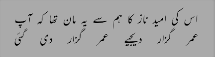

.jpeg)
14-12-1931 - 8-11-2002
Jaun Elia, a poet of unparalleled depth and brilliance, was a master of weaving melancholy, rebellion, and philosophy into his verses. His poetry, rich with themes of love, existential despair, and intellectual defiance, resonates with those who seek meaning beyond the ordinary. Born with an insatiable thirst for knowledge, he was not just a poet but also a philosopher, scholar, and linguist, shaping Urdu literature with his unique style and unfiltered expression. His words, often drenched in sorrow and longing, continue to touch the hearts of countless admirers, making him an eternal voice of pain, passion, and poetic genius. His legacy is not just in the poetry he left behind but in the way he redefined Urdu literature, giving it a voice that was raw, rebellious, and profoundly human.
Jaun Elia's Literary Genius
Jaun Elia was not just a poet; he was a scholar, editor, and linguist. Fluent in multiple languages, including Urdu, Arabic, Persian, Sanskrit, and Hebrew, he possessed an unmatched depth of knowledge. His first poetry collection, "Shayad", was published in 1991 when he was nearly 60 years old, despite having written poetry from a young age. His later works, including "Yani", "Gumaan", and "Lekin", showcased his unique poetic voice—one filled with rebellion, sarcasm, and philosophical reflection. His poetry was not just about heartbreak; it was a profound exploration of existence, politics, and society.
The Pain and Rebellion in His Poetry
Jaun Elia was a poet of melancholy and defiance. His verses carried the weight of sorrow, yet they also had an unmistakable rebellious tone. He challenged traditional norms, religion, and societal hypocrisy with his sharp words, making him a controversial yet beloved figure. His poetry often reflected a deep sense of disillusionment—with love, with society, and with life itself. His suffering was not just personal; he felt the pain of an entire generation that struggled with identity, ideology, and human existence.
Books
Jaun Elia's Legacy
Despite his passing on November 8, 2002, Jaun Elia's words continue to inspire and resonate with poetry lovers worldwide. His ability to capture complex emotions in simple words makes him a timeless literary figure. In an era where poetry is often commercialized, Jaun Elia’s work remains pure, raw, and deeply personal. His legacy is carried forward by those who read, recite, and cherish his verses, keeping his voice alive in the world of Urdu literature.
" Jaun Elia was not just a poet; he was a movement, a voice of the unheard, and a philosopher of pain and passion. His poetry captures the depth of human emotions—longing, despair, love, and rebellion—making it relatable across generations. His words, filled with raw honesty and existential reflections, continue to echo in the hearts of those who seek meaning beyond the ordinary. Though he is no longer among us, his poetry ensures that he will never be forgotten. "